Branch lf at 726f6cd735 on a private Machine (LF_HOME under /tmp, theme: "light:Fig Leaf,dark:Fig", one git repository with two Tasks). Its own mobile listener on the tailnet name with mobile-same-device in that home, paired from a fresh iPhone SE simulator (iOS 26.2). Desktop: isolated bundle with QAHook.swift, screen locked (idle 3.4 h). Website: main.py on port 5077 with Playwright. Run 2026-11-22.
73 pages crawled from /: all 200, no text under 4.5:1 (3:1 for large text) against its computed background, no Pico blue in color, background, border or outline. Wine #722f37 on the warm #faf8f5 ground; the install command is now a light terminal block with a 1 px edge. Docs code blocks: Light's terminal ground with the --border edge.

main for comparison (old pink-wine accent, black command block):


Tab through the header: "Company" drew Pico's blue focus ring (rgba(2,154,232,.5)), where every other link draws a 3 px wine ring. Pico's details summary:focus-visible:not([role]) outranked the header rule. Same on main.
Fix: the header rule is .site-header nav details summary:focus-visible:not([role]); Company now draws the wine ring. docs/dev/index.html regenerated; test_accessibility.py 17 passed, test_portable_architecture.py passed.
Before any Machine: Loopflow Light in light appearance, Loopflow Dark in dark.
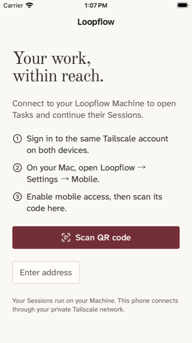
theme: is light:Fig Leaf,dark:FigFig Leaf in light appearance, Fig in dark (switched with simctl ui appearance, no relaunch). Backlog rows and a Task's screen draw in the same roles.
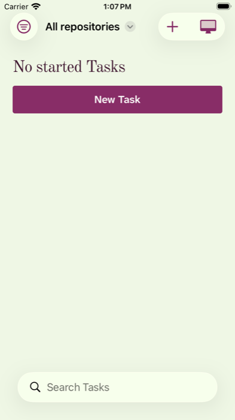


theme: Fig while the phone is lightBack to the foreground: Fig, with white system title text (the theme's own color scheme). The New Task sheet draws Fig too, so the implement note about UIKit sheets following the phone's appearance doesn't hold.

theme: "My Own Theme" → Loopflow Light in light appearance. An empty config → Loopflow Dark in dark.
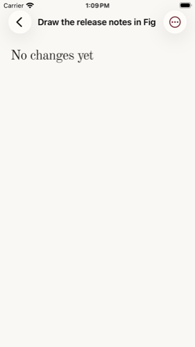

With the Machine's server stopped, a cold launch drew Fig from the remembered answer and said "The Machine is away; showing what was last read". After a restart the phone read Fig again. Forget Machine returned it to Loopflow's pair.

Paired with the live Machine (theme: Loopflow Light), in dark appearance: Tasks listed normally, the theme drawn was Loopflow Dark. The released server answers the new request with config.theme: missing field `path`; the phone keeps Loopflow's pair and shows nothing. It catches up when the Mac runs this build. No screenshot: the list shows personal Tasks.
Launch: the server log shows {"kind":"config.theme"} with no path; the window draws Fig Leaf; Choose Theme opens in System mode with "Light themes · Fig Leaf" ringed.

A live file edit to light:Moss Light,dark:Moss reached the running app within a few seconds (the watch follows the path the server named), and Choose Theme showed Moss Light chosen. A config.theme {value: "Fjord Light"} write over the socket (what Apply sends) wrote theme: Fjord Light and the window turned Fjord Light.
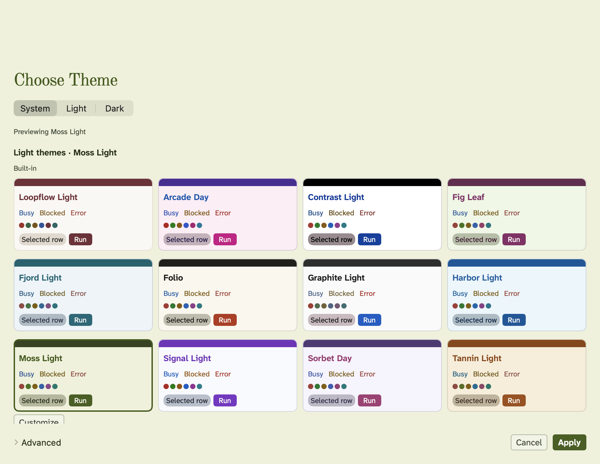
theme: "Verdigris": "No theme named “Verdigris”: keeping Fig Leaf. Fix theme: in /private/tmp/…/config.yaml …", naming the server's file, not this app's home.
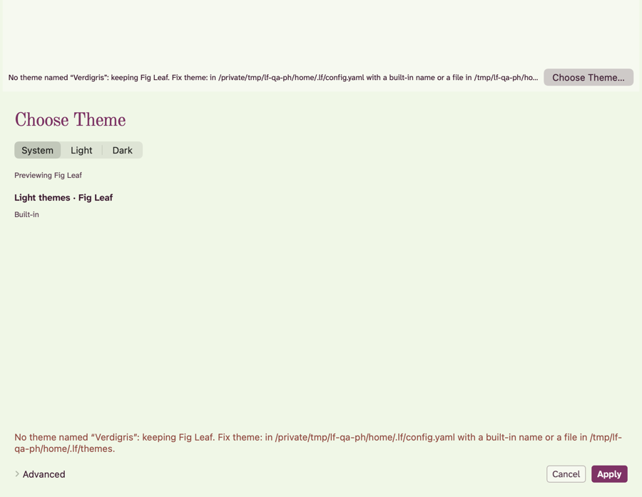
A copy of the installed lf (0.16.0) serving the same home: Desktop kept the last good theme and showed config.theme: missing field `path` above the window with Choose Theme…, which can't help. Switching back to the branch server, the next file change cleared it. The reverse also fails: a 0.16.0 client's path gets "unknown field `path`" from this build. Both report revision 9.

With the notice showing, Choose Theme opened with "Light themes · …" and "Built-in" and nothing under them: no cards, no Yours, no dark section, and none in the accessibility tree. It happened on every open while the notice was up. Without the notice (Moss live change) the cards were there. After resizing to 1500×900, the dark grid and Import tile drew, but the light grid drew only Terracotta Light.
Not fixed. The window is never key and the screen is locked, so this may be the same lazy-grid staleness as R4.5. Round 2 showed cards with a notice in Dark mode. Needs a look on an unlocked display.
The site is Loopflow Light on every page with no contrast failures. The phone draws its Machine's theme in both appearances, follows a change on return to the foreground, falls back to Loopflow's pair for unknown names, keeps the last answer while the Machine is away, and themes its sheets. Desktop reads and writes theme: through its server and names the server's file.
A physical iPhone. Desktop's Advanced disclosure (it ignores hook clicks), Apply/Cancel clicks, the Import panel, a key window's bar, the editor's Title bar row: unlocked display (ship-review).
1. Light cards missing from Choose Theme while the unknown-name notice is up (R5.10), if it shows on screen. 2. Version skew: neither side can read the other's config.theme, and both still say revision 9. The phone goes quiet, and Desktop shows a raw serde message with a Choose Theme… button that can't fix it (R5.7, R5.9). It lasts only until the Mac's server matches the client.
Isolated bundle com.loopflow.mac.qath4.dev, private Machine /tmp/lfq4 on the branch lf server run, a git-planned repository with one Task, production mode, .lf/qa/QAHook.swift. Screen locked (CGSSessionScreenIsLocked true, idle 2.8 h). Run 2026-11-22 at 5e03228191. The captures were lost in cleanup; what each showed is written here.
The bundle build stopped at third_party.py package: "Third-party inputs changed". Compress had moved Fjord, Signal and Tannin Light's bars.
Fix: the catalogue holds only Loopflow's own files now (no companions, Sources.md or Licenses/), so scripts/third_party.py no longer hashes swift/Loopflow/Themes or scans it for notices. The inventory loses 27 entries; test_third_party.py 9 passed; the bundle packaged. A theme edit can no longer break a Dev build or a release.
Settings → Appearance opened in Light mode on Loopflow Light, 13 light cards, Import tile. Clicking Fjord Light previewed it across the chooser and main window, ringed it, headed the section "Light themes · Fjord Light"; the mode stayed Light. Light mode shows no dark cards, so a card click cannot cross sides there.
Clicking Fig in the dark section: mode stayed System, "Previewing Fig", heading "Dark themes · Fig", Fig ringed with Customize, the light side kept "Harbor Light". The main window turned plum with lime headings. Same as before the change.
A copy of Fig as Plum: the control switched to Dark, Plum previewed, filed under dark Yours with Customize and Delete, "Supplied: …; 16 indexed colors; 34 app roles." and no Derived line. Closing the window wrote nothing: config.yaml still read theme: Loopflow Light, no themes/.
A capture two seconds after switching System → Light drew the chosen card's Customize button on top of the "Yours" label (chosen card in the last light row). Five seconds after the same switch the grid had re-measured and the label sat below the button. Not fixed: it looks like the non-key window's lazy re-layout, and may never show on a key window.
A card click previews on the card's own side in Light and System mode; import still switches Light/Dark mode and leaves System alone; closing discards the draft; the bundle packages after theme edits.
Apply and Cancel clicks, the real file panel, a key window's bar, the editor's Title bar row, the three moved light bars on a real title bar: unlocked display (ship-review).
The Customize-over-Yours frame (R4.5), if it shows on screen. Moss's quiet bar (round 3) still waits for a look.
Same method as round 2: isolated bundle com.loopflow.mac.qath3.dev, private Machine /tmp/lfq3 on the branch lf server run, a git-planned repository with one Task, production mode, .lf/qa/QAHook.swift. Screen locked (CGSSessionScreenIsLocked Yes, idle 2.5 h). Run 2026-11-22 at d62943431e. The hook gained import <path>, which stands in for the Import tile's file panel and then calls what the panel's OK calls.
theme: Verdigris"No theme named “Verdigris”: keeping Loopflow Light. Fix theme: in …/config.yaml with a built-in name or a file in …/themes." with Choose Theme… — the unknown-name sentence, no special case.

No Light/Dark theme buttons. The heading reads "Light themes · Loopflow Light". Moss Light sits where Verdigris was. The sentence repeats under the grid until a preview starts.
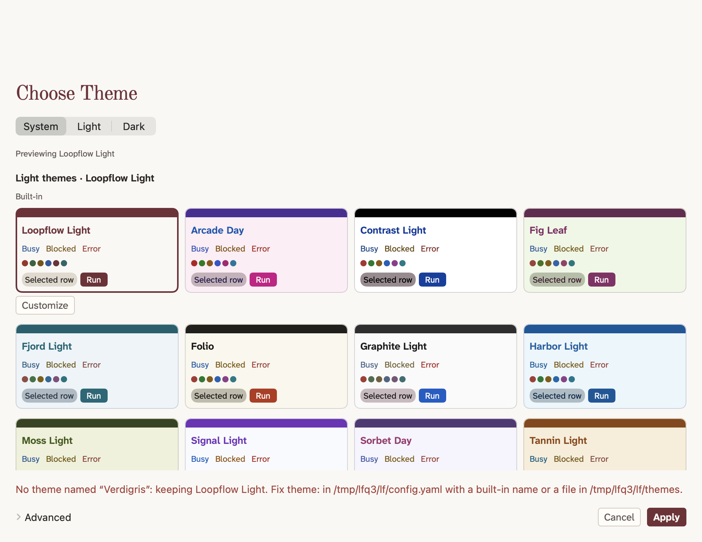
Light mode showed only the light section. Importing Bog (a copy of the Moss file) switched the segmented control to Dark, previewed Bog across the chooser, headed the section "Dark themes · Bog" and filed the card under dark Yours, ringed, with Customize and Delete.
Under it the diagnostics read "Supplied: …; 16 indexed colors; 34 app roles." then "Derived: ." — an empty list, shown for every complete file (every catalogue file now is). Present since #1560.
Fix: ThemeFile.parse writes the Derived line only when something was derived; ThemeTests.importDiagnosticsNameOnlyWhatWasDerived covers a partial and a complete file.
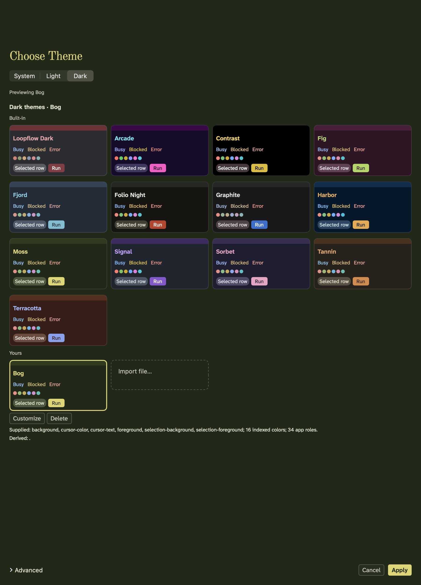
Mode stays System; Bog previews on the dark side (macOS is in light) as a card click does, both headings name their side's choice. The light side's chosen card takes Bog's focus color for its ring while Bog previews.

Cancel answered no synthesized click (two tries); nothing reached config.yaml or themes/. Closing the window left the setting unchanged.
lf set --global theme Moss, reopened: deep moss window and bar, lichen-yellow headings, no notice.

#2e3a1e on #202916) is a quiet band like Graphite's, not an accent bar; the family spec chose it. A look on screen decides whether it stays.Branch Dev app as an isolated bundle (com.loopflow.mac.qath2.dev) on a private Machine (/tmp/lfq2, branch lf server run, a git-planned repository with one Task), production mode, driven by .lf/qa/QAHook.swift. The screen was locked (CGSSessionScreenIsLocked 1, idle 2 h+). Run 2026-11-22 at 4c9120dff4.
The bundle build stopped at third_party.py package: "Third-party inputs changed". Round 2's last edit to swift/Loopflow/Themes/README.md came after the inventory refresh. Fixed with third_party.py refresh (one hash). Still nothing runs third_party.py check before a build; see questions.
theme: Gruvbox DarkOpens in Loopflow Dark with the sentence and a Choose Theme… button above the window.
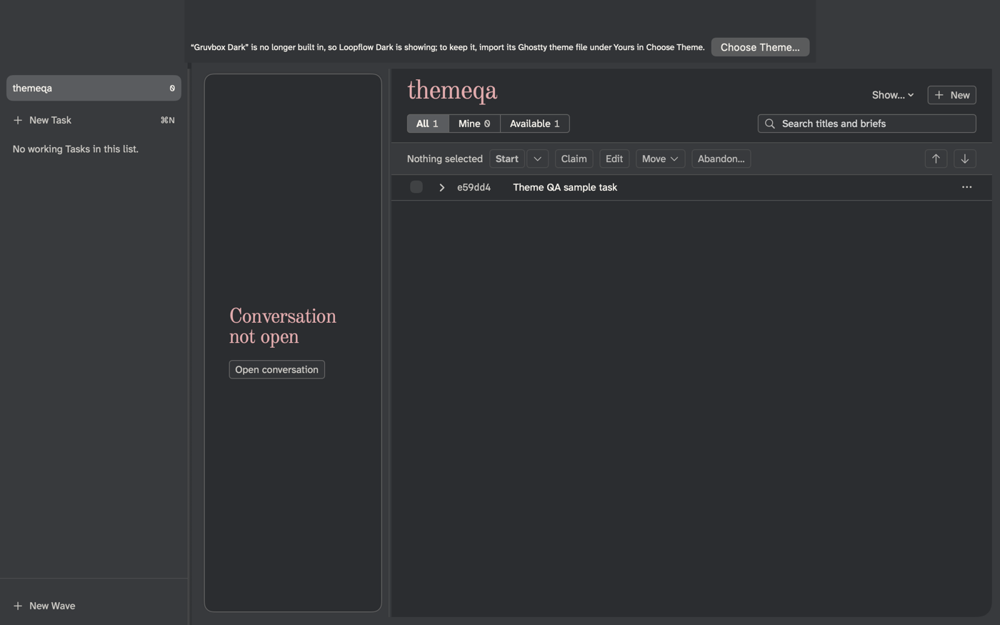
13 dark cards, each in its own colors, the chosen card ringed. The Customize button under the chosen card made that grid cell taller and the row centred every card on it: the chosen card sat about 14 pt above its neighbours (before, below). The retired-name sentence repeats at the bottom until a theme is previewed.

Clicking Fig previews plum with lime across the whole chooser and moves the ring.

Fix: the grid's items are top-aligned (GridItem(..., alignment: .top) in ThemeChooser.swift); the Customize button now hangs below its card without moving the row.
Apply answered no synthesized click this run (no config.theme write reached the server, five tries, single and paired), so Fig was set with lf set --global theme Fig. The running window turned plum with a plum bar and lime headings, and the notice went away.
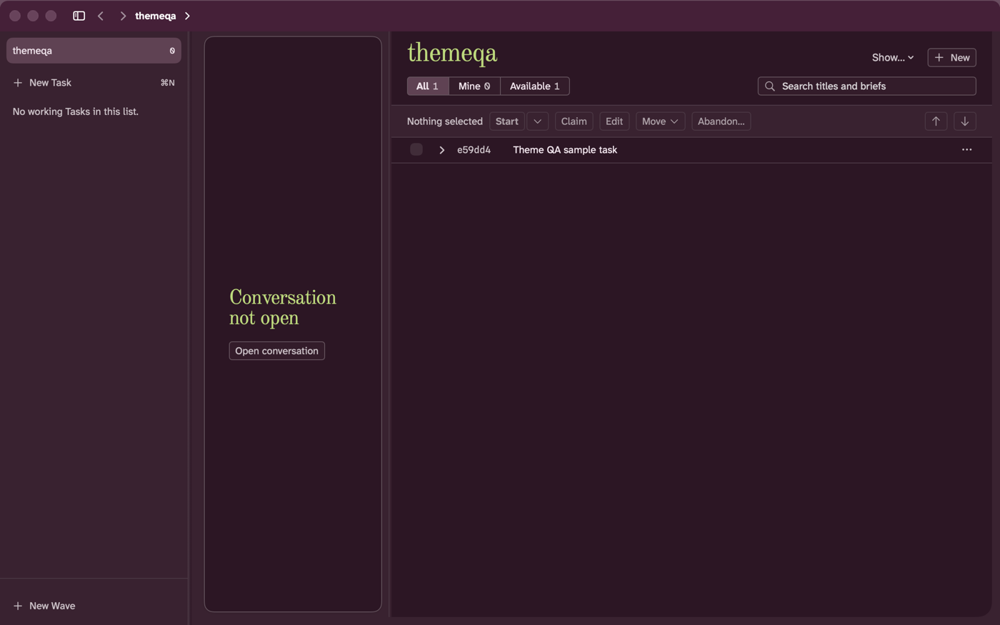
light:Fig Leaf,dark:Fig, after the fixLight themes first, each family's light half; the chosen Fig Leaf card's row lines up with its neighbours.

Opens the editor on Fig Leaf with "Apply writes …/themes/Fig Leaf". Its groups don't open under synthesized clicks, so the Title bar row was not seen.

Branch Dev app as an isolated bundle (com.loopflow.mac.qath.dev) on a private Machine (/tmp/lf-qa-th, branch lf server run, a git-planned repository with two Tasks), production mode, driven by .lf/qa/QAHook.swift. The screen was locked, so captures are the app's own frame views. Run 2026-11-22.
The first build stopped at third_party.py package: "Third-party inputs changed". The inventory hashes every catalogue theme file and the Themes README; all 25 had changed. No CI check runs this, so it would have surfaced first in a Dev build or a release. Fixed: refreshed swift/LoopflowMac/ThirdPartyNotices/inventory.json (commit "Refresh the third-party inventory for the changed theme files").
Burgundy bar, white breadcrumb, burgundy headings on the warm ground.
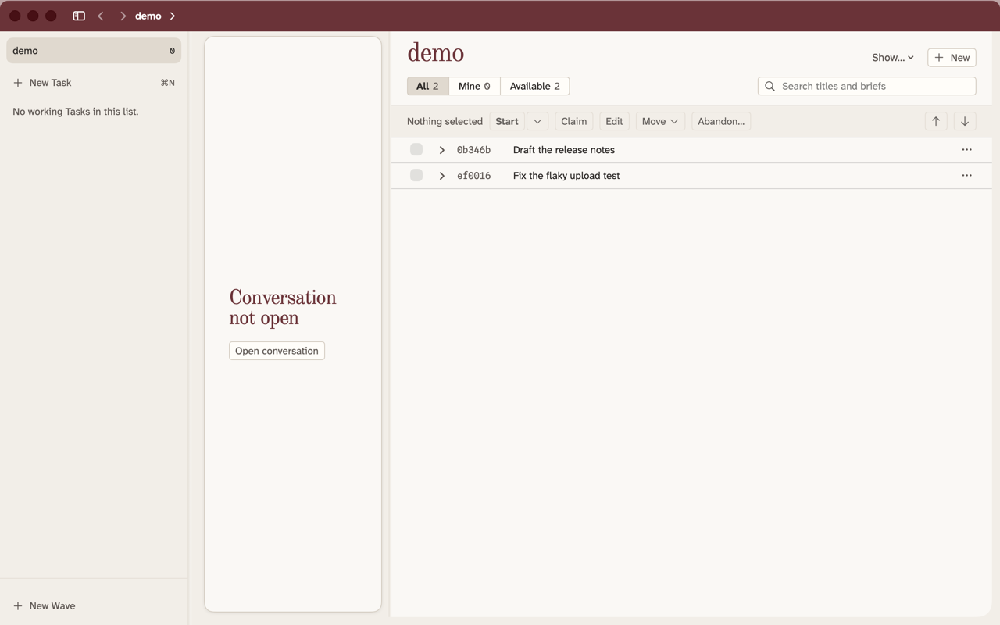
lf set --global theme "Loopflow Dark"The running window repainted without a relaunch: the same burgundy bar over the blue-grey window, rose headings. Bar pixels read back identical in both defaults (#7e4448 each; the hook's window is never key, which lightens the toolbar from the stated #722f37).
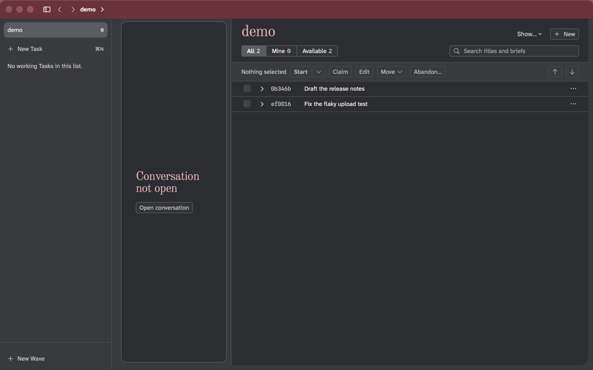
Settings → Appearance. The sample's bar paints the role (burgundy for Loopflow Dark). Customize opened the editor and its groups; "Actions and focus" did not expand under synthesized clicks, so the Title bar row and a saved file were not seen.

Old DarkNo loopflow-titlebar, accent #722f37, ground #2b3036. The bar comes from that file's accent: the muted plum-grey it painted before (rule gives #443036), not ANSI 4 and not the new burgundy.
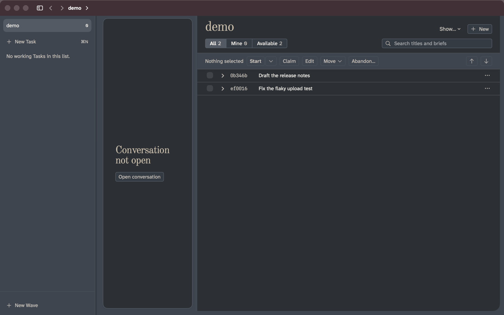
Old LatteAccent #7d705c. The rule darkens it to #635849 so the second text level reads; the bar is visibly darker than main painted it, white breadcrumb.

GitHub Light Default and Catppuccin Latte straight from Ghostty.app are refused for terminal cursor and selection text, and the app falls back to Loopflow Light with the notice. This is the existing import check, not this change; the title bar adds no refusal of its own here.

loopflow-titlebar get the bar from their own accent, darkened where the second text level would fail.| Command | Result | Who runs it |
|---|---|---|
| Branch Dev bundle, both defaults and two role-less files, looked at | passed, locked screen | this step |
swift test … 'WorkPaletteTests|TerminalColorTests|ThemeTests' | not rerun here | gate |